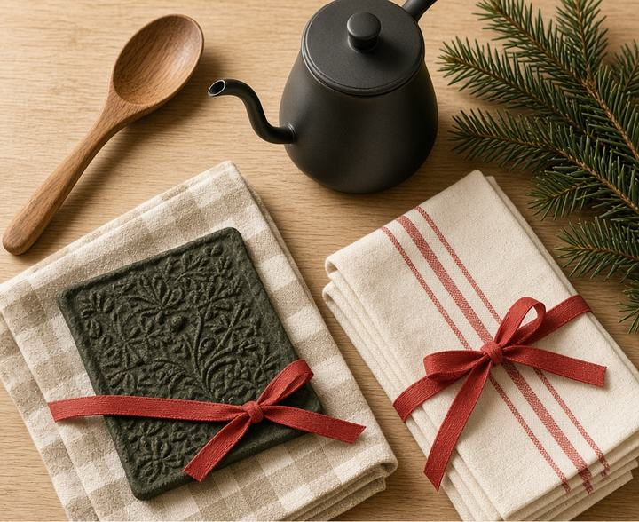
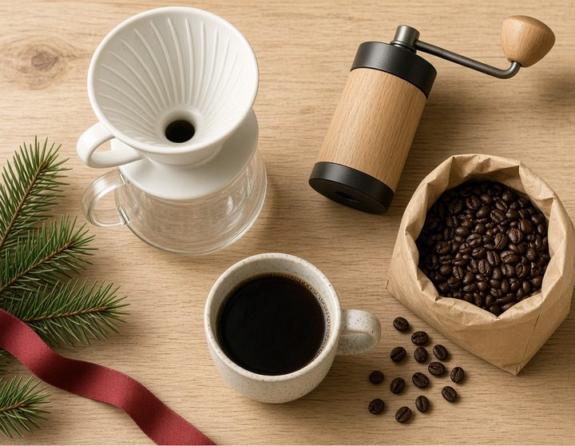
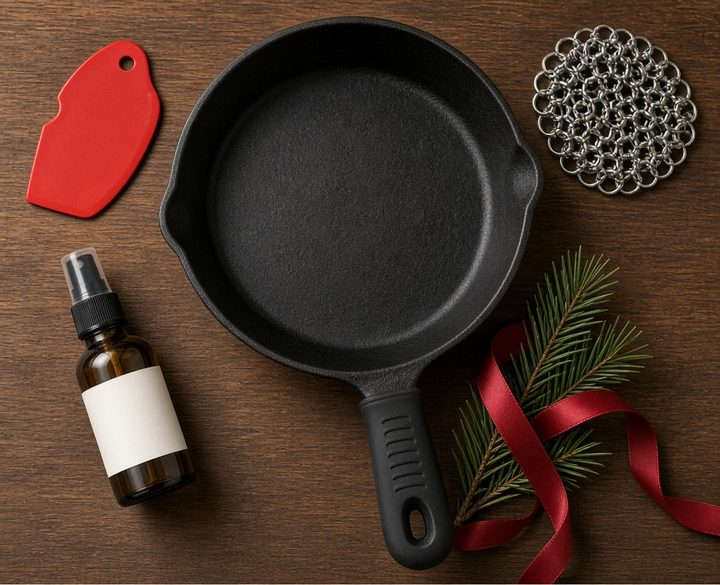

Plain-spoken guides for the kitchen — and every cupboard after it.
Counter & Cupboard is a small collection of honest buying guides for home cooks and home organizers. No 40-item roundups — just what's worth your counter space, your shelf space, and your money.
Tested at a real counterHoliday Gift Guides
Three short lists for people who already cook. Prices move, so check before you buy.

Small tools that fit in a stocking: a peeler, shears, a thermometer, a kettle.

A brewer, a hand grinder, a pour-over set, and a way to boil water.

Scrapers, a scrubber, a handle sleeve, oil, a lid, and a trivet.
Kitchen Stocking Stuffers Under $25
Small tools for a home cook: a peeler, shears, a thermometer, a kettle, and a few organizers that actually fit in a stocking. Prices move, so check before you buy.
Read the guide →Gifts for Coffee Lovers Under $50
A brewer, a hand grinder, a pour-over set, a scale, and a kettle — sized for a coffee gift, not a counter-hogging machine. Prices move, so check before you buy.
Read the guide →Gifts for Someone Who Just Got a Cast Iron Pan
Scrapers, a chainmail scrubber, seasoning oil, a handle sleeve, a lid, and a trivet. The pan is already theirs. These are the pieces that keep it in use.
Read the guide →Cast Iron vs. Nonstick: Which Skillet Should You Buy First?
If you only own one skillet, it should earn its spot. Here's how the two classics actually compare on a weeknight.
Read the guide →How to Choose a Chef's Knife (Without Spending $200)
The knife matters less than knife people say — and more than beginners think. What to look for, and where the money actually goes.
Read the guide →The Small-Kitchen Coffee Setup: Great Coffee in Four Square Feet
You don't need an espresso machine the size of a microwave. You need a grinder, one good brewer, and a kettle you like.
Read the guide →Stand Mixer or Hand Mixer? An Honest Guide for Home Bakers
The stand mixer is a wonderful machine that many kitchens don't need. Here's how to tell which kitchen is yours.
Read the guide →Glass vs. Plastic Food Storage: What to Actually Buy
The container drawer is where good intentions go to warp and stain. Here's the setup that ends the chaos.
Read the guide →Pantry Organization That Survives Real Life
Anyone can make a pantry beautiful for a photo. The trick is a system that still works after three chaotic weeknights.
Read the guide →Closet Organization on a Renter's Budget
No drilling, no custom systems, no landlord conversations. How to roughly double a closet with what is typically about $100 of removable gear.
Read the guide →Taming the Junk Drawer (and Every Drawer After It)
You don't eliminate the junk drawer. You give it borders. A method for the messiest drawer in the house — and all the rest.
Read the guide →